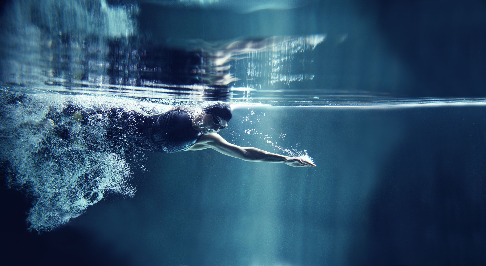
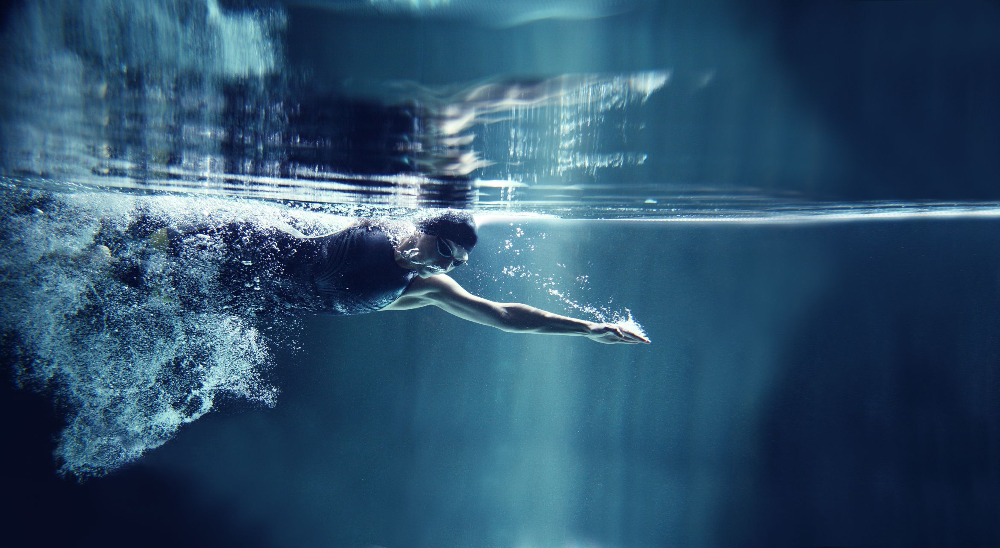

InfinityWiki
I/GuinnessRecord
10 ч. назад
Хорват Будумир Собат установил уникальное достижение по задержке дыхания. Он находился под водой дольше 20 минут. Как это возможно и не опасно ли для здоровья, разбирался спортивный обозреватель «МИР 24» Дмитрий Калугин.
 

Представители Книги рекордов Гиннесса официально зарегистрировали новый мировой рекорд по статической задержке дыхания. Его установил настоящая легенда фридайвинга Будумир Собат.
Свое собственное достижение хорват превзошел почти на полминуты. Все это время у бассейна дежурили врачи, впрочем, их помощь Будумиру не понадобилась.
62 тыс
931
SergeI123
541
12
TheProMaster
375
21